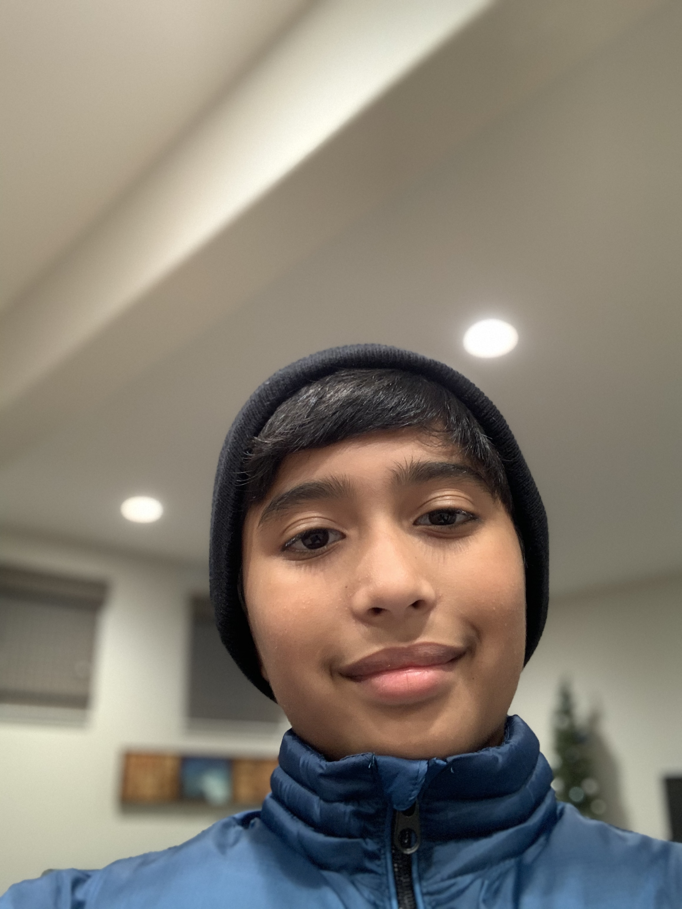

About ME - Dhruv Torney
Career Goal:
I have never been too sure how I want my career to be like, to this day I don't know exactly how I want my future to be. However there are somethings I do plan on. For example, I know that I want some job relating to Computer Science and Programming along with video games if ever possible. My plan to accomplish this is by setting clear educational goals along the way. For instance, I plan to get a degree through a four year college and perhaps even do my masters in a college revolving around programming and computer science. I chose this pathway and goal because, I have always been intrested in computers and videogames from a very young age. I plan my career to revolve around these two because they are my two passions and I would love to be involved in a field relating to them.
Strengths and personal qualities:
A few qualities that I possess, which set me apart from other people is, I am helpful, I am honest, I am humorous. First of all I am helpful, because whenever someone needs help, I am always more then willing to support. I also am honest, therefore I am trust worthy and I can convey my limits. Lastly, I also am humorous, which is important to bring up the mood if ever needed in a project or any group secenario.
Acheivements and What I have learned:
Although, I have not accomplished much in my life, there are still some key moments which I am proud of from highschool. Firstly, I am proud that I was able to succsessfully create a functional app in PLTW CSE in the first semester. Another achievement I have accomplished is, making the Emerald High Soccer Team as a starter on the lineup. The last achievement I am proud of in highschool is
actually winning a few games with the EHS Soccer Team even while
facing teams who are older then us and have years more of expierence.
Through these expierences I have learned to be reliable when someone needs me and being able to be responsibile with tasks and deadlines
I also have learned how to be more responsibile while working as team but also just to better my life.
| Contact Options |
Details |
| Email |
torneydhruv@gmail.com |
| Mobile/Phone |
(925) 487-2693 |
